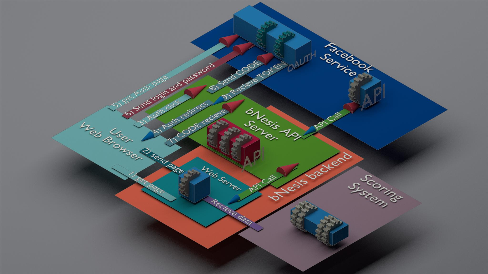

bNesis Discount Calculator is a demo version of a web application developed by using bNesis SDK. It allows users to receive the best loan proposals by sharing their personal data from social networks, cloud storages, payment systems. Data exchanging between this application and cloud services is realized by using of cloud services APIs.

Fig.1. Schematic representation of interaction between bNesis Discount Calculator application and service (Facebook).
The best loan's finding starts after user's authorization at a main page. User have to register himself
or input his login and password if he has been already registered. User's authorization at different business and social services
in the pages of the bNesis Discount Calculator gives for a bank a permission to obtain user's personal date, latest transaction,
amount of deposits etc. At a loan type page applicant can choose a type of loan, amount and period. Month payment will be
appeared automatically. Car, mortgage, small business and personal needs are available loan's types. The list of data providers
is situated at the next applicant's information share page. Facebook, LinkedIn and Google drive are available services to obtain
a necessary information about an applicant. Choosing a service, applicant clicks the corresponding icon, authorizes himself at the
service and gives permissions for bNesis Discount Calculator application to obtain data. The more data applicant shares, the better
discount on the interest rate and better chance to have an approved loan he has. Loan interest rate discount meter displays a value of
a discount depending of used services for information sharing. After finishing of an information sharing applicant is going to click button
Send data&calculate. The decision about receiving of a chosen loan will be displayed on a next page after processing of applicant's data.
Often it is possible to authorize at the application and cloud services by using of an user's account in different banks, mobile operators,
social networks or other public ID. Authorizing by using of another service accounts is named OAuth authorization. It is a more easy and
quick possible way of authorization for the user, because at the same time the user should not input his personal data (name, soname, e-mail,
password etc). So new technology as OAuth authorization is used in the bNesis Discount Calculator.
There are only three simple steps: Authorization, Loan type choosing and Applicant data sharing - applicant have to do it before result will be obtained.
Authorization
To make an authorization, visit the bNesis Discount Calculator start page: http://socialpilot.bnesis.com/Home
Loan type choosing
Loan type choosing page is displayed after successful authorization. Car, small business, personal needs are available types
of loan. Each type is represented by icon and name of a loan type.
Applicant data sharing
The applicant data sharing page consists of the represented services icons (data providers) and loan interest rate discount meter. The more data applicant shares, the better discount on the interest rate and better chance to be approved for
the getting loan he has. Loan interest rate discount meter shows by applicant a current discount value depending of the numbers of used data providers.
bNesis Discount Calculator is a demo version of a web application developed by using bNesis SDK. It allows to receive shared personal data of user from users accounts in different cloud services (social networks, cloud storages, payment systems) by using of cloud services APIs. Demo version contains a limited number of cloud services to demonstrate the capabilities of the bNesis technology.
bNesis does not collect or store any user data. All data received about users remains at the disposal of the application owner.
To obtain users personal data from cloud services allowedly, the application has to be registered in each service. Registration procedure depends from each service requirements. Some services ask about especial agreements with them.
For example, if application has been registered on Facebook, it has a status in development by default. For public using of the application you need to switch in application settings status Live. Three scopes (email, public_profile,user_friends ) are available by default with the status Live. Scopes allow to ask user permissions for a user personal data access. Each scope is responsible
only for its part of personal data. Scope email provides an access to the person's primary email address. Scope public_profile provides an access to a person's basic information, including first name, last name, profile picture, gender and age range. Scope user_friends provides an access to the person's list of friends that also uses your app. Permissions for using additional scopes of public
application have to be approved by Facebook and It must not violate Facebook policies.
Each person, who registrates himself on the Facebook service his public application, has two groups of users: administrators and developers). They can call API with any scopes. It is very useful for application testing and updating. bNesis Discount Calculator is a demo version and personal data with any scopes can be obtained only from users. BNesis Discount Calculator users data can be obtained
only with three scopes: email, public_profile, user_friends.
In case of LinkedIn. bNesis Discount Calculator is registered at this service, but there is only a few approved scopes like "r_basicprofile", "r_emailaddress", "rw_company_admin", "w_share". Scopes "r_basicprofile", "r_emailaddress" are allowed to access to the basic profile fields. For more information read: https://developer.linkedin.com/docs/fields/basic-profile . Scope "rw_company_admin" allow
to read information about a company and to make posts from the company, where user is an administrator. Scope "w_share" makes the share information from user, requires especial permission from LinkedIn. For using all available LinkedIn APIs with necessary scopes you have to be approved by LinkedIn Marketing Developer Program.
Scopes for Google Services do not need an especial permission from the service. Scopes are necessary to work with Google Drive by calling APIs. For example, scope https://www.googleapis.com/auth/drive.readonly allows to view files in users Google Drive. By accessing or using Google APIs, you agree with the Google APIs Terms of Service: https://developers.google.com/terms/.